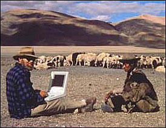

About the Project
Knowledge of the social and political history of Tibet during the second half of the Twentieth Century has been limited by the absence of the voices of everyday Tibetans. The Tibet Oral History and Archive Project was undertaken by Professor Melvyn C. Goldstein, Director, Center for Research on Tibet (Case Western Reserve University) to collect and preserve these voices and with it a record of the diversity of life as it was lived in Tibet in the traditional and socialist eras.
The ensuing Oral History Archive consists of the original recordings in Tibetan and the English transcripts of the interviews of almost 700 Tibetans (and a few Chinese) living in the Tibet Autonomous Region of China and in exile in India about their lives and modern history. This archive, the largest of its type in the world, contains three collections: the Common Folk Oral History collection, the Political Collection and the Drepung Monastery Collection.
The Common Folk Collection consists of recorded interviews with over 600 Tibetans from all walks of life. in Tibet and in India.
The Political Collection consists of recorded interviews with former Tibetan government officials who played important roles in Tibet 's history. The topics discussed include historical events in both the traditional and socialist periods.
The Drepung Monastery Collection consists of recorded interviews on monastic social and economic life with roughly 100 monks who were members of Drepung monastery in the traditional era. Drepung monastery is located 5 miles outside of Lhasa and was Tibet 's largest monastery, housing about 10,000 monks in 1959 at the end of the traditional era.
Melvyn C. Goldstein
John Reynolds Harkness Professor in Anthropology
Co-Director, Center for Research on Tibet
Case Western Reserve University
Cleveland, Ohio 44106
Ph. 216 368-2265, Fx. 216 368-5334
Center for Research on Tibet: http://www.cwru.edu/affil/tibet/